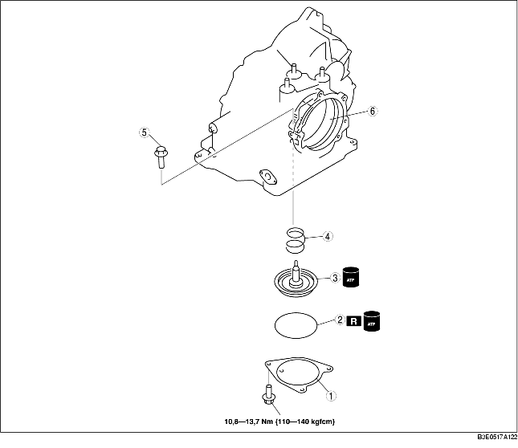

1. Ta isär i den ordning som tabellen anger.
2. Montera i omvänd ordning jämfört med demonteringen.

1. Mät fjäderns fria längd.
Specifikation
|
Ytterdiameter mm {tum}
|
Fri längd mm {tum}
|
Antal varv
|
Tråddiameter
mm {tum}
|
|---|---|---|---|
|
34,0 {1,340}
|
36,4 {1,430}
|
2,5
|
4,0 {0,160}
|
2. Montera servots returfjäder på växellådshuset.
3. Montera servokolven på växellådshuset.
4. Stryk på automatväxellådsolja på en ny O-ring och montera den på växellådshuset.
5. Montera servothållaren genom att dra åt bultarna jämnt och gradvis.